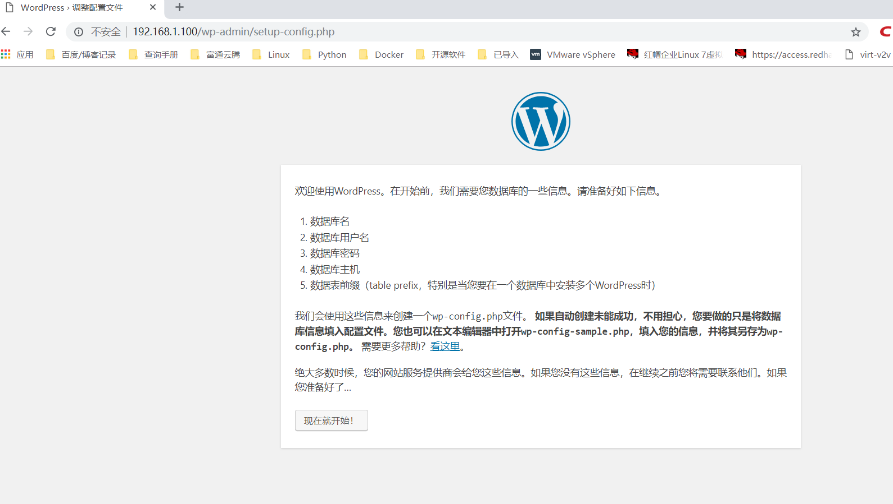
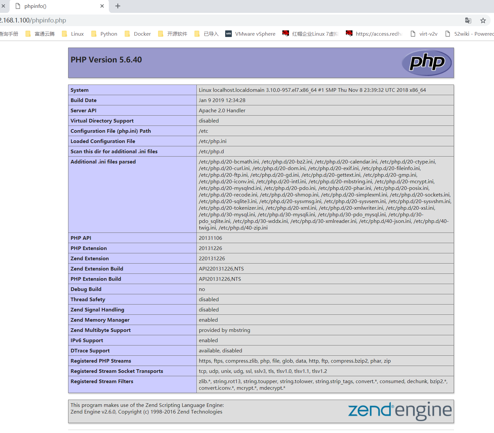

Contents
6.1. LAMP+WordPress环境¶
LAMP = Linux + Apache + Mysql + PHP
可以全部部署在1台服务器上
也可以分离Mysql数据库进行部署
Apache和PHP需要在同一台机器上，因为PHP是作为Apache的一个模块存在的
6.1.1. 更多LAMP部署参考¶
Lamp https://www.cnblogs.com/f-ck-need-u/p/7642992.html Lamp http://www.apelearn.com/study_v2/chapter17.html
6.1.2. LAMP与WordPress概述¶
LAMP是一组构建Web应用平台的开源软件解决方案，它是一个开源套件组合。
其中，“L”指的是Linux（操作系统），“A”指的是Apache HTTP服务器，“M”指的是MySQL或者MariaDB，“P”指的是指Perl或Python。
这些开源软件本身都是各自独立的程序，但是因为常放在一起使用，拥有了越来越高的兼容性，所以，就用 LAMP 这个术语代表一个 Web应用平台解决方案。
在CentOS 7之前，LAMP就代表Linux、Apache、MySQL和PHP。
而随着CentOS 7系列发布的发布，由于CentOS 7中MySQL被MariaDB了，那么LAMP随之就变为Linux、Apache、MariaDB和PHP。
本节就在CentOS 7.1环境下介绍LAMP环境的搭建过程。
WordPress是一个免费的开源项目，在GNU通用公共许可证下授权发布。它使用PHP语言和MySQL数据库开发，最初是一款个人博客系统，目前已逐步演化成一款内容管理系统软件。
WordPress是世界上使用最广泛的博客系统，
因为使用者众多，所以WordPress社区非常活跃，有丰富的插件模板资源，易于扩充功能，安装、使用都非常方便。
这里我们想通过LAMP平台搭建一个WordPress网站系统，后台使用MariaDB数据库，并且使用phpMyAdmin管理数据库，
同时使用独立域名www.ixdba.net进行访问。下面介绍这个过程。
1.安装并配置Apache¶
安装Apache的方法有很多种，这里选择通过yum方式进行安装，但需要Linux系统能够连接互联网，执行如下命令，安装Apache。
[root@localhost ～]#yum install httpd
默认安装的Apache版本为httpd-2.4.6-31.el7.centos.x86_64，
通过yum安装的Apache，安装完成后，
默认配置文件主目录位于/etc/httpd下，
Apache的主配置文件/etc/httpd/conf/httpd.conf
Apache 模块位于/usr/lib64/httpd/modules 目录下，
Apache 模块的配置文件位于/etc/httpd/conf.modules.d 目录下，
Web 根目录位于/var/www/html/目录下，
日志文件位于/var/log/httpd/目录下。
在/usr/lib64/httpd/modules目录中，可以看到有很多Apache模块。
这么多模块都是Apache默认安装的，但这些模块大部分并不是我们需要的，因而，要确保httpd高效、安全地工作，需要禁用其中一些模块，以提高 Apache 的性能，减少占用的内存。
禁用方法很简单，编辑/etc/httpd/conf/conf.modules.d目录下的每个文件，删除或注释掉不需要的模块即可。
这里重点关注/etc/httpd 目录。在这个目录下，有个 conf.d 目录。默认情况下，/etc/httpd/conf.d 目录下所有以“.conf”结尾的文件都会被读取。
因此，很多情况下，根本不需要修改主配置文件/etc/httpd/conf/httpd.conf，而是在/etc/httpd/conf.d/下新建一个以“.conf”结尾的文件来完成各种配置。
要实现独立域名访问，可通过配置 Apache 的虚拟主机来实现，这里在/etc/httpd/conf.d/目录下新建一个文件ixdba.conf，内容如下
[root@localhost ~]# cat /etc/httpd/conf.d/ixdba.conf
<VirtualHost *:80>
ServerAdmin admin@ixdba.net
ServerName www.ixdba.net
ServerAlias www
DocumentRoot /data/www/html/ixdba
<Directory "/data/www/html/ixdba/">
Options FollowSymLinks
AllowOverride All
Require all granted
</Directory>
ErrorLog /var/log/httpd/ixdba_error.log
CustomLog /var/log/httpd/ixdba_access.log combined
</VirtualHost>
然后创建虚拟主机的文件夹。
[root@localhost ixdba]#mkdir -p /data/www/html/ixdba/
这个文件夹就是用来存放WordPress主程序的目录。接着将Apache设置为开机自启动模式，执行如下命令。
[root@localhost ixdba]#systemctl enable httpd
输出类似如下。
ln -s '/usr/lib/systemd/system/httpd.service' '/etc/systemd/system/multi-user.target.wants/httpd.service'
最后重新加载httpd，执行如下命令。
[root@localhost ixdba]#systemctl reload httpd
systemctl start httpd.service
这样，Apache的安装和配置就完成了，将www.ixdba.net域名做好解析，然后访问这个地址，如果正确，就会就出现Apache的欢迎页面。
6.1.3. 安装并配置MariaDB（MySQL）¶
MariaDB是MySQL的一个分支，采用GPL授权许可，目前主要由开源社区在维护。MariaDB的目的是完全兼容MySQL，包括API和命令行，使之能轻松成为MySQL的代替品。目前，大型互联网用户以及Linux发行商纷纷抛弃MySQL，转投MariaDB阵营。MariaDB是目前最受关注的MySQL数据库衍生版，发展前景不可限量。CentOS从7.x版本开始默认使用MariaDB。 通过yum方式安装MariaDB非常简单，执行如下命令即可。
[root@localhost app]#yum install mariadb-server mariadb
[root@localhost app]#rpm -q mariadb mariadb-server
mariadb-5.5.41-2.el7_0.x86_64
mariadb-server-5.5.41-2.el7_0.x86_64
安装完成后，将MariaDB设置为开机自启动，操作如下。
[root@localhost app]#systemctl enable mariadb
输出类似如下。
ln -s '/usr/lib/systemd/system/mariadb.service' '/etc/systemd/system/multi-user.target.wants/mariadb.service'
接着，启动MariaDB，执行如下命令。
[root@localhost app]#systemctl start mariadb
最后，登录MariaDB，执行如下命令。
[root@localhost ~]#systemctl start mariadb.service
[root@localhost ~]#mysql -uroot -p
Enter password:
Welcome to the MariaDB monitor. Commands end with ; or \g.
Your MariaDB connection id is 2
Server version: 5.5.60-MariaDB MariaDB Server
Copyright (c) 2000, 2018, Oracle, MariaDB Corporation Ab and others.
Type 'help;' or '\h' for help. Type '\c' to clear the current input statement.
MariaDB [(none)]>
[root@localhost ~]# systemctl stop mariadb
[root@localhost ~]# systemctl restart mariadb
[root@localhost ~]# systemctl status mariadb
● mariadb.service - MariaDB database server
Loaded: loaded (/usr/lib/systemd/system/mariadb.service; enabled; vendor preset: disabled)
Active: active (running) since 六 2019-02-23 14:36:37 CST; 6s ago
Process: 41936 ExecStartPost=/usr/libexec/mariadb-wait-ready $MAINPID (code=exited, status=0/SUCCESS)
Process: 41905 ExecStartPre=/usr/libexec/mariadb-prepare-db-dir %n (code=exited, status=0/SUCCESS)
Main PID: 41935 (mysqld_safe)
CGroup: /system.slice/mariadb.service
├─41935 /bin/sh /usr/bin/mysqld_safe --basedir=/usr
└─42035 /usr/libexec/mysqld --basedir=/usr --datadir=/var/lib/mysql --plugin-dir=/usr/lib64/mysql/plugin --log-er...
2月 23 14:36:35 localhost.localdomain systemd[1]: Starting MariaDB database server...
2月 23 14:36:35 localhost.localdomain mariadb-prepare-db-dir[41905]: Database MariaDB is probably initialized in /var/li...ne.
2月 23 14:36:35 localhost.localdomain mysqld_safe[41935]: 190223 14:36:35 mysqld_safe Logging to '/var/lib/mysql/localh...rr'.
2月 23 14:36:35 localhost.localdomain mysqld_safe[41935]: 190223 14:36:35 mysqld_safe Starting mysqld daemon with datab...ysql
2月 23 14:36:37 localhost.localdomain systemd[1]: Started MariaDB database server.
Hint: Some lines were ellipsized, use -l to show in full.
MariaDB 通过内置的安全配置脚本可实现对数据库的安全保护，执行“/usr/bin/mysql_secure_installation”命令，加固MariaDB数据库，操作过程如下。
[root@localhost yum.repos.d]# mysql_secure_installation
NOTE: RUNNING ALL PARTS OF THIS SCRIPT IS RECOMMENDED FOR ALL MariaDB
SERVERS IN PRODUCTION USE! PLEASE READ EACH STEP CAREFULLY!
Enter current password for root (enter for none):
#这里输入目前MariaDB数据库的root密码，默认是空
OK, successfully used password, moving on...
Setting the root password ensures that nobody can log into the MariaDB
root user without the proper authorisation.
Set root password? [Y/n] y
#这里询问是否设置MariaDB数据库root的密码，输入"Y"给root用户设置一个新密码
New password:
Re-enter new password:
Password updated successfully!
Reloading privilege tables..
... Success!
By default, a MariaDB installation has an anonymous user, allowing anyone
to log into MariaDB without having to have a user account created for
them. This is intended only for testing, and to make the installation
go a bit smoother. You should remove them before moving into a
production environment.
Remove anonymous users? [Y/n] y #这里询问是否删除anonymous用户，输入"Y"删除
... Success!
Normally, root should only be allowed to connect from 'localhost'. This
ensures that someone cannot guess at the root password from the network.
Disallow root login remotely? [Y/n] y #这里询问是否关闭root用户远程登录权限，输入"Y"
... Success!
By default, MariaDB comes with a database named 'test' that anyone can
access. This is also intended only for testing, and should be removed
before moving into a production environment.
Remove test database and access to it? [Y/n] y #这里询问是否删除测试数据库及其权限，输入"Y"
- Dropping test database...
... Success!
- Removing privileges on test database...
... Success!
Reloading the privilege tables will ensure that all changes made so far
will take effect immediately.
Reload privilege tables now? [Y/n] y #这里询问是否重新载入授权表，输入"Y"
... Success!
Cleaning up...
All done! If you've completed all of the above steps, your MariaDB
installation should now be secure.
Thanks for using MariaDB!
至此，MariaDB数据库安装完成了。
6.1.4. 3.安装并配置PHP¶
这里仍以yum方式介绍如何安装和配置PHP。CentOS 7.1版本中，默认的PHP版本为PHP 5.4，可直接执行如下命令进行PHP以及相关模块的安装： 很多时候，对PHP环境要求较新的版本，例如，PHP 5.6环境，如果通过源码编译、安装，将会非常麻烦。这里提供一种通过yum工具安装最新PHP 版本的方法。首先，需要在系统上安装一个扩展yum源，即epel源，可从http://fedoraproject.org/wiki/EPEL 网站下载针对CentOS 7版本的epel文件，然后进行安装，操作过程如下。
# yum install epel-release
# rpm -ivh http://rpms.famillecollet.com/enterprise/remi-release-7.rpm
默认情况下，REMI是禁用的。要检查REMI源是否已经成功安装，可以执行如下命令。
[root@localhost ～]# yum repolist disabled | grep remi
要搜索REMI仓库中是否有可用的包，可以执行如下命令。
[root@localhost ～]# yum --enablerepo=remi list php
或者
[root@localhost ～]# yum --enablerepo=remi-php56 list php
通过这种方式，就可以很方便地安装自己需要的PHP版本。例如，要安装PHP，5.6版本，执行如下命令即可。
6.1.5. 4.安装phpMyAdmin¶
phpMyAdmin是一个用PHP编写的软件工具，可以通过Web方式控制和操作MySQL数据库， 管理者可以通过Web接口的方式远程管理MySQL数据库 可以很方便地建立、修改、删除数据库及表，通过phpMyAdmin可以使MySQL数据库的管理变得十分简单和高效。 下面通过yum方式安装phpMyAdmin，操作过程如下。
yum install --enablerepo=remi --enablerepo=remi-php56 phpmyadmin
yum会自动寻找依赖软件包，然后自动完成phpMyAdmin的安装。 phpMyAdmin的默认安装目录是/usr/share/phpMyAdmin， 同时会在Apache的配置文件目录中自动创建虚拟主机配置文件/etc/httpd/conf.d/phpMyAdmin.conf。 由于这里介绍的 Apache版本是Apache 2.4.6，所以需要对phpMyAdmin.conf文件做些修改， 在phpMyAdmin.conf文件中找到类似下面的内容。
Allow from 127.0.0.1
Allow from ::1
将这些内容修改为：
Require all granted
这里“Require all granted“的含义类似于Apache之前版本中的“Allow from all”，表示任何地方都可以访问，如果不对这个设置做修改，将在访问的时候出现403错误。 然后，重新启动httpd服务，执行如下命令。
[root@localhost ～]# systemctl restart httpd
最后，通过地址http://www.ixdba.net/phpMyAdmin/ 访问phpMyAdmin，
设置登录语言为中文，登录用户名root，
密码就是上面通过mysql_secure_installation设置的那个密码，
即可登录phpMyAdmin。
6.1.6. 5.部署WordPress程序¶
WordPress 的官网为 https://wordpress.org，中文官网为 http://cn.wordpress.org/，
读者可以在这两个网站下载WordPress安装程序。
目前最新的稳定版本为WordPress 4.2.2，这里下载的是中文版本wordpress-4.2.2-zh_CN.zip，
把解压后的程序上传到前面设置虚拟服务器时设定的文件夹/data/www/html/ixdba下。
mv wordpress-5.0.3-zh_CN.zip /data/www/html/ixdba/
cd /data/www/html/ixdba/
mv wordpress-5.0.3-zh_CN.zip ../
unzip wordpress-5.0.3-zh_CN.zip
mv wordpress/* ixdba/
默认情况下，httpd服务的运行用户为apache。为了安全起见，
我们添加另一个普通用户作为httpd服务的运行账号，执行如下命令添加一个系统用户。
[root@localhost ～]# useradd ixdba
[root@localhost ～]# passwd ixdba
用户创建完成后，还需要将 WordPress 程序中所有文件都修改为 ixdba 用户权限，执行如下操作。
[root@localhost ～]# chown -R ixdba:ixdba /data/www/html/ixdba
最后，修改/etc/httpd/conf/httpd.conf文件，找到如下内容。
User apache
Group apache
修改为：
User ixdba
Group ixdba
这两个选项设置httpd服务的运行用户和组，这里修改为ixdba用户和ixdba组。 为了运行WordPress程序，还需要在数据库中提前创建一个用于存储WordPress数据的库。这里将WordPress的数据库命名为cmsdb。下面开始创建数据库。 先登录MariaDB数据库，执行如下操作。
[root@localhost conf.d]# mysql -uroot -padmin#123
Welcome to the MariaDB monitor. Commands end with ; or \g.
Your MariaDB connection id is 43
Server version: 5.5.60-MariaDB MariaDB Server
Copyright (c) 2000, 2018, Oracle, MariaDB Corporation Ab and others.
Type 'help;' or '\h' for help. Type '\c' to clear the current input statement.
MariaDB [(none)]> create database cmsdb;
Query OK, 1 row affected (0.00 sec)
MariaDB [(none)]> grant all on cmsdb.* to 'ixdba' identified by 'ixdbapassword';
Query OK, 0 rows affected (0.00 sec)
MariaDB [(none)]> flush privileges;
Query OK, 0 rows affected (0.00 sec)
chown -R ixdba:ixdba ixdba/

这个就是WordPress的安装向导界面， 安装过程会提示输入连接数据库的地址、库名、用户名、密码、表前缀， 数据库地址默认是 localhost，保持默认地址即可， 库名、用户名和密码分别为之前设置的 cmsdb、ixdba 和 ixdbapassword， 数据库表前缀保持默认前缀即可。根据向导依次进行操作即可完成安装。
6.1.7. 测试LAMP环境安装的正确性¶
在LAMP 环境搭建起来之后，如何测试PHP环境的正确性呢？如何知道安装了哪些模块，缺少了哪些模块？非常简单！只需要几行代码就能搞定，请看下面一段代码。
<?php phpinfo(); ?>
将这段代码保存的一个文件中，命名为phpinfo.php，然后放到Web服务的根目录下。通过浏览器访问http://ip/phpinfo.php; 
在这个页面中，显示了PHP的各种信息。通过这个页面，读者就能清晰地知道PHP环境中都安装了哪些模块，哪些模块没有安装，这对于部署或配置LAMP环境来说至关重要